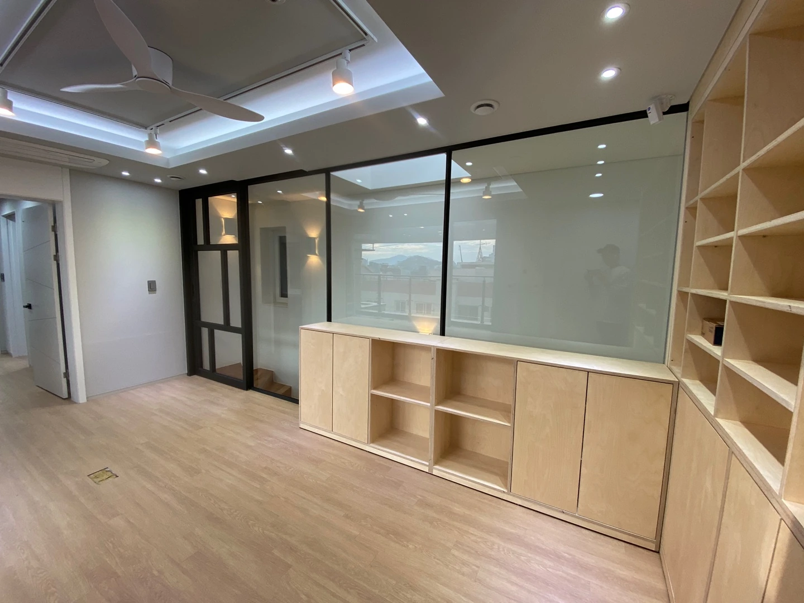
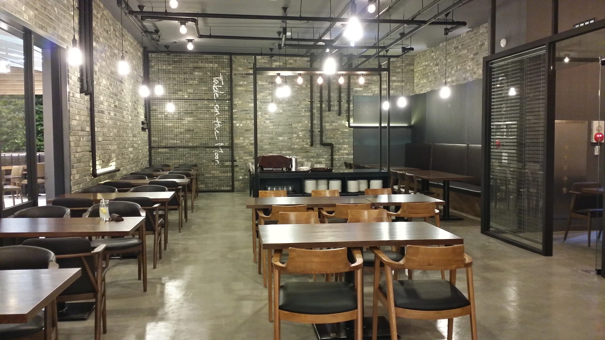

BUILT PROJECT / 2020
시공 · BUILT대연동 주택DAEYEON HOUSE
목재 수납과 유리 파티션, 층을 잇는 계단으로 구성한 주택.

03PROJECT OVERVIEW
수납과 동선으로 정리한 일상의 공간.
목재 수납장과 유리 파티션, 층을 연결하는 계단을 함께 살펴볼 수 있는 주택 현장입니다. 밝은 실내 마감과 검은 프레임이 대비를 이루고, 천장과 벽면의 조명이 각 공간의 경계를 드러냅니다.
PROJECT GALLERY
공간의 장면들
